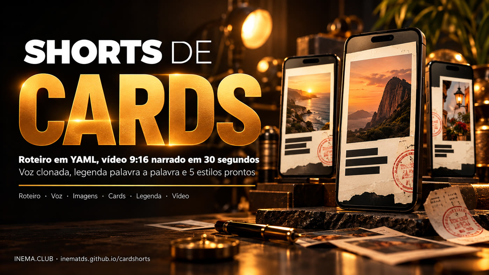
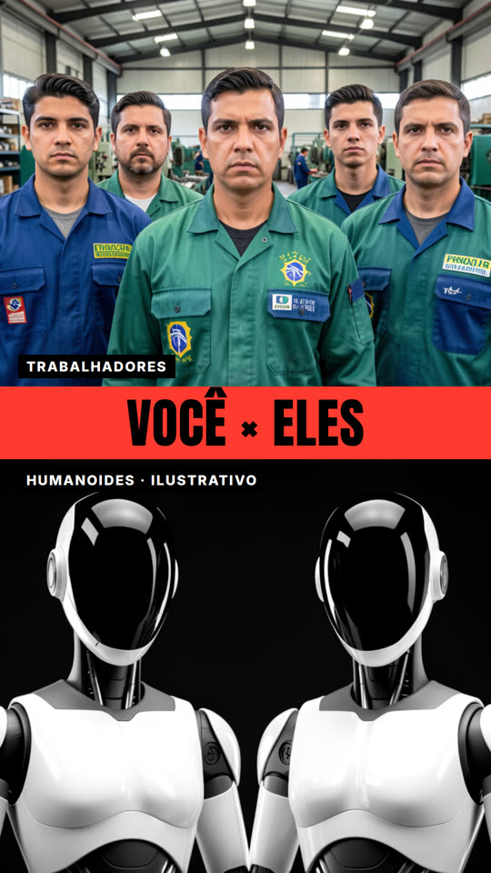
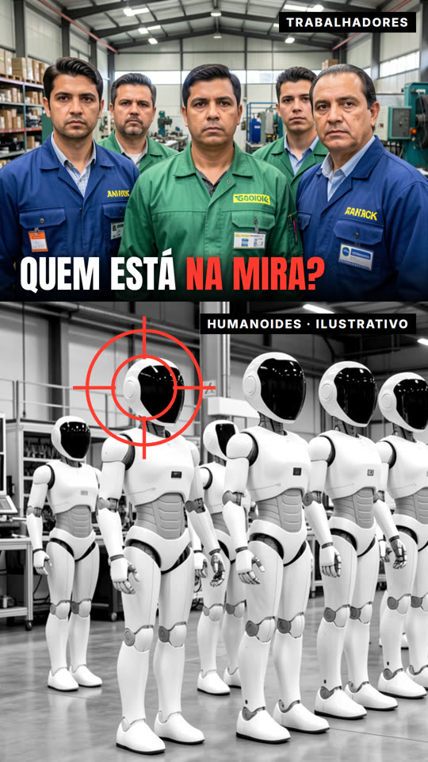
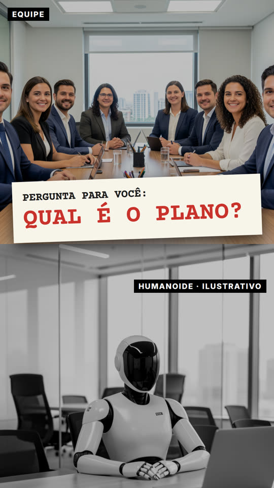
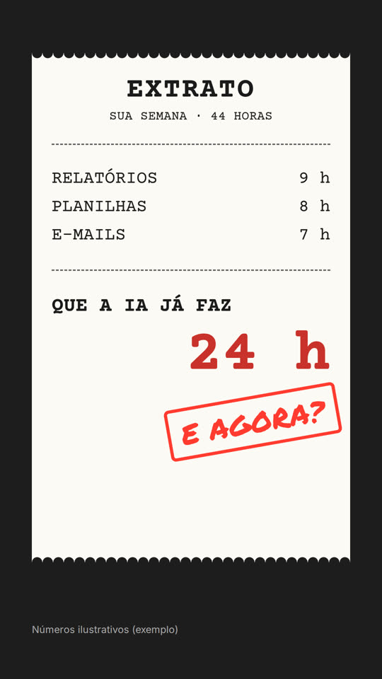
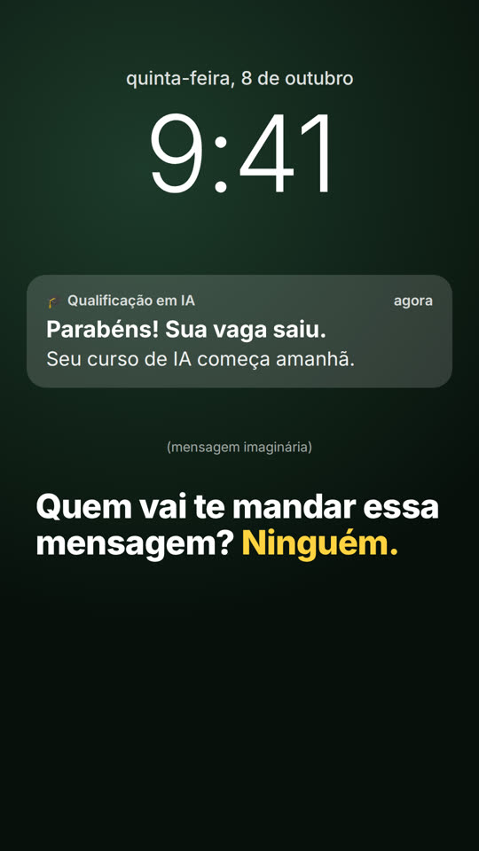

Você escreve as falas e escolhe os cards. O cardshorts grava a voz, confere, gera as imagens e monta o vídeo com legenda.

O cardshorts é uma ferramenta de linha de comando que cria vídeos curtos verticais (Reels, Shorts, TikTok) a partir de um arquivo de texto. Cada cena tem uma fala e uma tela pronta (um "card"). A ferramenta grava a narração com uma voz clonada, confere se a voz falou certo, gera as imagens e entrega o MP4 com legenda palavra a palavra, cabendo em 30 segundos. É para quem quer publicar vídeos provocativos com frequência sem editar na mão. Roda no seu computador, com placa de vídeo e os projetos de voz e imagem do INEMA instalados.
Nasceu de uma série de shorts sobre IA no Brasil. O que funcionou virou molde: cinco estilos de tela, regras de voz e de conteúdo e um comando que faz o resto.
O roteiro.yaml lista as cenas: fala + molde de card + textos. Um comando entrega o MP4 1080×1920.
Cada fala é transcrita depois de gravada. Se a voz errou palavra, grava de novo (até 3 vezes) e corta o balbucio do fim.
Acelera a fala até 1,2× para caber no tempo máximo. Se não couber, para e avisa quanto cortar.
Cada etapa usa uma ferramenta local. Voz e imagens ficam em cache: mudou um texto, só aquela fala é gravada de novo.
Os caminhos podem ser trocados por variáveis CS_* ou por um config.yaml na raiz do projeto.
inemavox com tts_direct.py (Chatterbox) e transcrever_v1.py (Whisper large-v3), e um áudio de referência da voz.
export CS_INEMAVOX=~/projetos/inemavox export CS_VOZES=~/minhas-vozes # nei.wav, etc.
Servidor com POST /generate (inemaimg com FLUX.2 klein).
export CS_IMAGEM_API=http://localhost:8000/generate
ffmpeg com libass, Chrome headless do Playwright e Python 3 com PyYAML.
npx playwright install chromium-headless-shell pip install pyyaml
Comece pela prévia, que é rápida. Só grave a voz quando os cards estiverem bons.
Lista os 5 estilos, os moldes de cada um e os campos que cada molde pede.
git clone https://github.com/inematds/cardshorts && cd cardshorts ./cardshorts.py estilos
Copia o roteiro de exemplo do estilo escolhido.
./cardshorts.py novo meus/ia-trabalho --estilo versus
Uma fala por cena, escrita como se fala: números por extenso, "inema ponto club". Em 30 segundos cabem umas 70 palavras.
estilo: versus max_seg: 30 musica: true voz: {ref: nei} imagens: dupla: {prompt: "two modern faceless humanoid robots...", w: 1088, h: 640} cenas: - fala: "De um lado, quem trabalha. Do outro, os humanoides." molde: capa-dupla campos: {foto_cima: "img:equipe", foto_baixo: "img:dupla", faixa: "VOCÊ × ELES", ...}
Gera as imagens e os cards e junta tudo em previa.png. Veja se nenhum texto saiu do card e se a faixa da legenda (parte de baixo) não cobre o título.
./cardshorts.py cards meus/ia-trabalho/roteiro.yaml # → previa.png
Grava a voz (uns 2 minutos por fala na primeira vez), confere cada fala, ajusta a velocidade e monta. O log mostra a legenda final para revisar.
./cardshorts.py montar meus/ia-trabalho/roteiro.yaml # narração 31.4s → velocidade 1.13x # pronto: meus/ia-trabalho/ia-trabalho.mp4 (28.6s)
Mudou uma fala? Só ela é gravada de novo. Palavra errada na legenda? Corrija no roteiro, sem regravar.
correcoes: {garanda: garanta} ./cardshorts.py musica musicas/calma.mp3 "calm lofi piano, instrumental" # outra trilha
A pasta skill/ é uma skill para Claude Code e Codex: ela escolhe estilos diferentes para cada versão e segue as regras de conteúdo.
ln -s $PWD/skill ~/.claude/skills/cardshorts # no Claude Code: "/cardshorts faz 3 versões diferentes sobre ..."
Para fazer três versões de um tema, use três estilos. O mesmo molde com outro texto sai parecido demais.





exemplos/versusQuatro cenas, voz clonada, trilha tensa gerada localmente e legenda palavra a palavra. Saiu deste comando, sem edição manual:
./cardshorts.py montar exemplos/versus/roteiro.yaml
| O comando garante | Como |
|---|---|
| Fala fiel ao texto | Transcrição local; abaixo de 85% de semelhança, grava de novo |
| Sem ruído no fim | Corta 0,35 s depois da última palavra ouvida |
| Até 30 s | Velocidade entre 1,0× e 1,2×; acima disso, pede corte |
| Música sem cobrir a voz | A trilha abaixa sozinha quando a voz entra |
A versão atual cobre os cards estáticos. Próximos passos:
video: na cena).